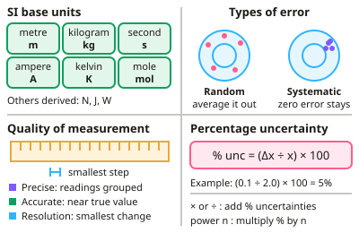

A-level Physics Year 12 · Topic 1
Measurements and their errors
Measurements and their errors is the toolkit for every practical and calculation in A-level Physics.
We will look at SI units, types of error, precision and accuracy, and how to combine uncertainties when values are added, multiplied or raised to powers.
Then we use graphs, error bars and linearisation, essential maths skills, measuring instruments, and how to plan and evaluate investigations.
- 8 subtopics
- 312 questions
- Free: 1.1 notes and 10 questions
In this topic
- 1.1Units, estimation and uncertaintyFree below · 15 questions
- 1.2Random and systematic errors, precision, accuracy, repeatability, reproducibility and resolutionOpen in Full Marks · 47 questions
- 1.3Combining uncertainties: absolute, fractional and percentage uncertaintyOpen in Full Marks · 34 questions
- 1.4Graphs: linearisation, error bars, and gradient and intercept uncertaintiesOpen in Full Marks · 32 questions
- 1.5Mathematical skills: standard form, significant figures, logarithms, exponentials, trigonometry and small-angle approximationsOpen in Full Marks · 25 questions
- 1.6Planning investigations: variables, methods and risk assessmentOpen in Full Marks · 41 questions
- 1.7Evaluating methods and conclusions; research sources and referencingOpen in Full Marks · 50 questions
- 1.8Measuring instruments and techniques: micrometer, calipers, oscilloscope, light gates and data loggersOpen in Full Marks · 68 questions
1.1 · Free notes
Units, estimation and uncertainty

Key points
- SI base units: metre (m), kilogram (kg), second (s), ampere (A), kelvin (K), mole (mol). All other units are derived from these.
- Random errors vary unpredictably and are reduced by repeating measurements and averaging; systematic errors shift all readings the same way (e.g. zero error) and are not reduced by repeats.
- Precision means consistent, closely grouped values; accuracy means values close to the true value; resolution is the smallest change an instrument can detect.
- Percentage uncertainty = (uncertainty ÷ measured value) × 100. When multiplying or dividing, percentage uncertainties add; when raising to a power n, multiply the percentage uncertainty by n.
In more detail
- Derived units in base units: newton = kg m s⁻²; joule = kg m² s⁻²; watt = kg m² s⁻³; volt = kg m² s⁻³ A⁻¹; check equations are homogeneous by comparing base units on each side.
- Estimation examples: mass of an adult ≈ 70 kg; height of a room ≈ 3 m; speed of a car on a motorway ≈ 30 m s⁻¹; energy in a chocolate bar ≈ 1 MJ.
- Worked % uncertainty: length 2.50 ± 0.01 m (0.4%) and time 1.25 ± 0.02 s (1.6%) → speed v = 2.00 m s⁻¹ ± 2.0% = 2.00 ± 0.04 m s⁻¹.
- Uncertainty in a power: if r has 2% uncertainty, r³ (volume) has 6% uncertainty.
Practice
Units, estimation and uncertainty: 10 questions
Pick an answer to check it, or open the answer for the explanation.
1. Which of these is an SI base unit?
- Newton
- Joule
- Kelvin
- Watt
Show answer
C: Kelvin. Newtons, joules and watts are derived units.
2. How can random errors be reduced?
- By using a different instrument only
- By repeating measurements and taking a mean
- They cannot be reduced
- By adding a systematic correction
Show answer
B: By repeating measurements and taking a mean. Averaging reduces the effect of random scatter.
3. A measurement of 2.0 cm has an uncertainty of ±0.1 cm. What is the percentage uncertainty?
- 0.1%
- 2%
- 5%
- 10%
Show answer
C: 5%. (0.1 ÷ 2.0) × 100 = 5%.
4. A length of 2.0 ± 0.1 cm is used to find the area of a square. What is the percentage uncertainty in the area?
- 5%
- 10%
- 20%
- 2.5%
Show answer
B: 10%. Area = length², so percentage uncertainty doubles to 10%.
5. What is a systematic error?
- A random variation between readings
- An error shifting all readings in the same direction, such as a zero error
- An error that averages out
- An error due to reaction time only
Show answer
B: An error shifting all readings in the same direction, such as a zero error. Repeating readings doesn't remove it.
6. A measurement of 50.0 ± 0.5 cm has what percentage uncertainty?
- 0.5%
- 1%
- 5%
- 10%
Show answer
B: 1%. (0.5 ÷ 50.0) × 100 = 1%.
7. Which of these units is a derived SI unit rather than an SI base unit?
- newton
- ampere
- kelvin
- mole
Show answer
A: newton. The newton is derived (1 N = 1 kg m s⁻²). The kelvin, ampere and mole are SI base units.
8. Which equation is homogeneous in units? (v, u speeds; a acceleration; s distance; t time)
- s = ½at
- v² = u² + 2as
- v = u + at²
- s = ut + ½at
Show answer
B: v² = u² + 2as. In v² = u² + 2as every term has units m² s⁻². The other equations add or equate terms with different units.
9. A cube has side 5.0 ± 0.1 mm. What is the percentage uncertainty in its volume?
- 8%
- 2%
- 6%
- 4%
Show answer
C: 6%. The side has a 2% uncertainty. Volume is side cubed, so multiply the percentage uncertainty by 3 to get 6%.
10. Mass 120 ± 1 g and volume 50 ± 2 cm³ give the density. Which statement about its uncertainty is correct?
- The uncertainties cancel when dividing
- Both contribute equally to the total
- Mass dominates as it has the larger value
- Volume dominates; its % uncertainty is larger
Show answer
D: Volume dominates; its % uncertainty is larger. Mass has 0.8% uncertainty and volume has 4%. Percentage uncertainties add when dividing, so volume dominates.
Keep going in Full Marks
Full Marks has 15 questions on Units, estimation and uncertainty (5 more than here), set out in practice levels. You also get notes and 3D models for all 8 subtopics of Measurements and their errors, plus games, timed exams and past papers.
On your exam board
- AQATopic 1: Measurements and their errors
- OCR ATopic 1: Development of practical skills in physics, Topic 2: Foundations of physics
- OCR BTopic 1: Development of practical skills in physics, Topic 2: Fundamental data analysis
- EdexcelTopic 1: Working as a physicist
- CambridgeTopic 1: Physical quantities and units, Topic P: Practical skills (Paper 3)